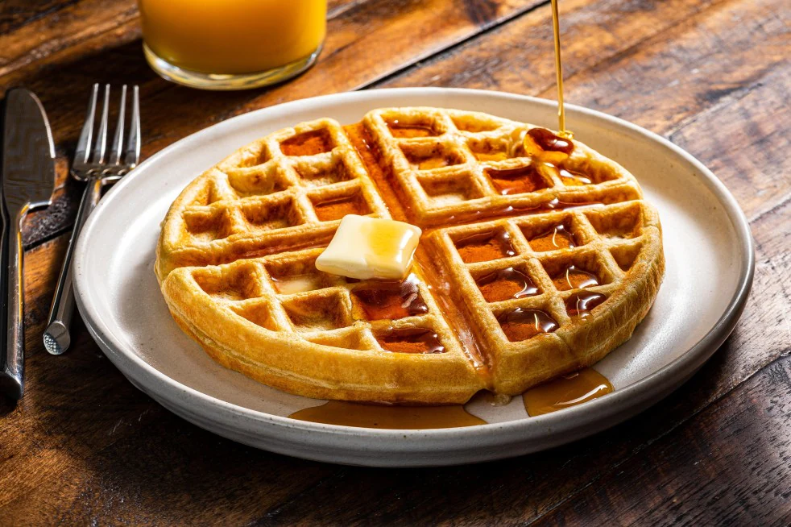

Classic Waffles

Description
There are waffles... and then there are your grandma's
waffles! Enjoy the taste of home sweet home with this
recipe - nothing beats the classics!
Ingredients
- 2 cups all-purpose flour
- 1 teaspoon salt
- 4 teaspoons baking powder
- 2 tablespoons white sugar
- 2 eggs
- 1 1/2 cups warm milk
- 1/3 cup butter, melted
- 1 teaspoon vanilla extract
Steps
- In a large bowl, mix together flour, salt,
baking powder and sugar; set aside. Preheat
waffle iron to desired temperature.
- In a separate bowl, beat the eggs. Stir in the
milk, butter and vanilla. Pour the milk mixture
into the flour mixture; beat until blended.
- Ladle the batter into a preheated waffle iron.
Cook the waffles until golden and crisp. Serve
immediately.
To go back, click here